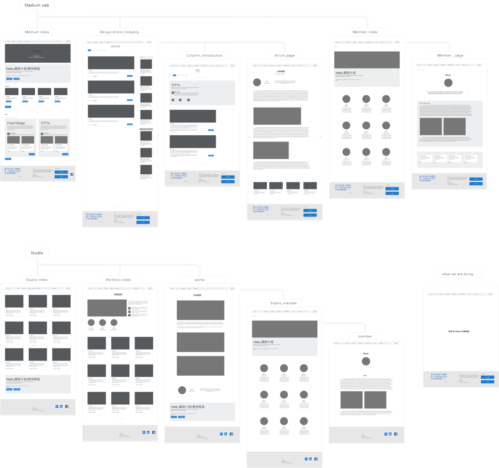

Design Act website
2017
Tool : Adobe XD / Photoshop
設計思社群媒體網站、接案工作室網站。
設計思是一個推動設計培力的社群，希望能讓設計能夠深化設計的行動和學習，讓每個人能夠找到改變世界的方式。
Wireframe與GUI提案。
Wireframe
Graphical User Interface - landing page
設計思網站的媒體首頁GUI提案。
一到站後希望使用者能不迷航，使用設計思的品牌色蒲公英色形象作為視覺焦點，，目的於可以在接收到品牌的意象下，知道會接下來可以往哪邊走、有什麼地方可以讓使用者探索，首頁第一畫面只留輪播與bar使訊息少一點。
顏色上由文章自己的顏色為主角，希望其他顏色能低調一些以灰米白為主，重點色使用設計思原本的黃色來使用，在左上表扮演指引bar和logo的腳色，中間則是輪播條，順下去右下角後的標籤暗示使用者可以往下看下去，文章hover使用黃線。
輪播正中間是窗與底片重曝的意象，輪播照片與整個畫面有一些互相交疊的效果，運用透明度相疊，希望表現出：
在現今資訊混雜的社會中，
設計思開啟了的那道窗讓觀覽者看到了不一樣的世界。